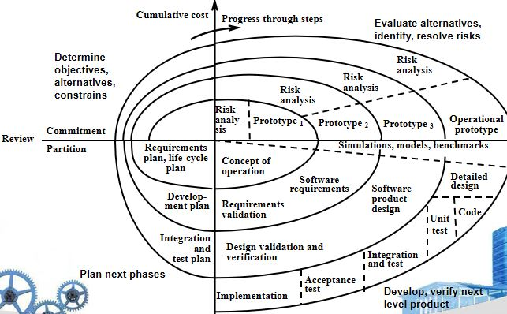

软件工程
第二章 软件工程(Software Engineering)
一、软件工程基本概念(Defining the Discipline)
1.软件工程定义
The application of a systematic, disciplined, quantifiable approach to the development, operation, and maintenance of software; that is, the application of engineering to software.
关键词：
- systematic, disciplined, quantifiable
- development, operation, and maintenance
2.软件工程特点
（1）系统化(systematic)：应用系统思维思考问题。
（2）定量(quantifiable)：定量研究贯穿软件工程全过程。
3.软件工程——层次化技术
（1）高质量目标(a quality focus)
（2）过程模型(process model)：一种高质量的路线图(road map)，保证及时、高质量的结果。
（3）方法：包括需求分析、设计、测试、构造等，即如何构造软件。
（4）工具：CASE(Computer-Aided Software Engineering)
二、软件过程(Softwar Process)
1.公共过程框架(Common Porcess Framework)
- 定义了过程由哪些要素组成。
- 由若干框架活动(Framework Activities)组成。
2.框架活动(Framework Activities)
- 工作任务(work tasks)
- 工作产品(work products)
- 关键点、考核物(milestones & deliverables)
- 检查点(QA checkpoints)
3.普适性活动(Unmrella Activities)
- 项目管理(Project management)
- 质量保证(Quality assurance)
- Work product production
- Measurement
- Formal technical reviews
- Configuration management
- (Reusability management)
- 风险管理(Risk management)
4.通用过程框架(Generic Process Framework)
(1)交流(communication)：客户沟通、需求汇总。
(2)规划(planning)：建立工程计划，描述技术风险，列举资源需求，定义工作规划。
(3)建模(modeling)：建立模型，以帮助开发者和用户理解需求、软件设计。
(4)构造(construction)：代码生成、测试。
(5)部署(Deployment)：软件部署（如：制作安装包、安装程序，写指导文档，培训等；云时代需将软件部署至云上，部署更为复杂）
5.过程适配(process adaptation)——适应性的过程改造
- activaties, actions and tasks的总体流程(overall flow)，及其内在迁移
- 每个框架活动内部，动作、任务定义的程度
- 工作产品被识别、需求的程度
- 应用质量保证的方式
- 进行项目追踪和控制的方法
- 过程描述细节和严密性的程度
- 消费者参与工程的程度
- 软件团队的自主权(autonomy)
- 团队组织和角色的规定
三、软件工程实践(Software Engineering Principle)
1.实践关键
（1）理解问题(communication + analysis)
（2）解决方案规划(modeling + software design)
（3）执行计划(code generation)
（4）检查结果的精确度(testing + quality assurance)
2.一般原则
（1）用户思维：软件工程的存在原因——为用户提供价值。
（2）大道至简：Keep it Simple, Stupid
（3）不忘初心：Maintain the Vision
（4）换位思考：What you produce, others will consume
（5）面向未来：Be open to the future
（6）谋划复用：Plan ahead for reuse
（7）多思考：Think
3.管理误区(management myths)
（1）规章制度需要依靠质量保证手段进行落实。
（2）给进度落后的项目添加人手，反而可能进一步延迟项目进度。
（3）软件项目外包，并不意味着完成了一切。
4.客户误区(consumer myths)
（1）需求定义必须足够详细，项目规划必须完善、充分。
（2）随着需求的不断变化，软件的相应更改不可以轻易进行，而是更改代价不断上升。
5.实践者误区
（1）并非写好程序，能够跑起来，就完成了所有工作。
（2）能工作的程序只是软件配置(configuration)的一部分，还包括文档、数据等。
（3）软件工程的文档并非无用，而是让产品更具有质量，生命周期更长。
第三章 软件过程结构(Software Process Structure)
一、一般过程模型(A Generic Process Model)
1.软件过程框架
- 框架(framework)
- 框架活动(framework activity)
- 若干动作(action)及其相应任务集
2.过程流(process flow)
- 交流
- 规划
- 建模
- 构造
- 部署
（1）线性(linear)过程流

（2）迭代(iterative)过程流

（3）演化(evolutionaru)过程流

（4）并行过程流(parallel)
- 例如：产品定义与建模并行进行。
二、过程模式(process patterns)
1.过程模式
- 定义了一组由活动、动作、工作任务、工作产品和相关行为构成的集合。
2.模板
- 提取共性，定义过程模式。
3.一般软件模式的元素
- 有意义的模板名
- 目标
- 类型：任务模式、Stage模式、Phase模式
- 初始上下文：使用该模板的先验条件
- 解决方案：如何正确实现该模式
- 结果上下文：模式正确实现后，产生的结果
- 相关模式
- 已知使用/例子：模式可以应用的领域
三、过程评价(process assessment)
1.过程评价：对软件过程进行检验和评价。
- 能力判定
- 软件过程改进

2.CMMI(The Capability Maturity Model Integration)标准
（1）背景
- 由CMU软件工程学院提出
- 评价和指导企业软件工程的能力与成熟度
（2）级别
- 级别0-不完整(Incomplete)：未执行软件过程，或不能完成所有本级别目标。
- 级别1-执行级(Performed)：软件过程完整。
- 级别2-管理级(Managed)：顾客积极交互，任务和过程受到监督、回顾和评估，分析是否与过程描述一致。
- 级别3-定义级(Defined)：管理和工程过程文档化、标准化，融入组织级别的软件过程。
- 级别4-量化管理级(Quantitatively Managed)：软件过程和产品能够通过细节化的评估，进行量化理解和控制。
- 级别5-优化级(Optimizing)：通过过程和新概念测试得到的反馈，进行持续的过程改善。
第四章 过程模型(Process Models)
一、惯例模型(prescriptive models)
1.惯例过程
- 对于软件工程，定义了一些有序的方法。
2.问题
（1）惯例模型如果讲究结构和顺序，能否适应软件世界的变化？
（2）如果拒绝传统的过程模型（及其顺序），是否可能实现协调和一致？
3.瀑布式模型（线性模型）
- 沟通、规划、建模、建设、部署逐步执行。
- 优点
- 简单
- 缺点
- 实际工程很少遵从顺序流。
- 用户一般不能清晰地说明所有需求，因此沟通阶段耗时较长。
- 最后才能得到工程结果，反馈不及时。
- 适用情况
- 需求明确，更改少的情形，如工程实施项目。
4.瀑布式模型的改进（V模型）

- 设计步骤：需求建模->体系结构设计（高层）->构建设计（底层）->代码生成
- 测试细化：单元测试、整合测试、系统测试、接受性测试，分别与四个设计步骤对应。
5.增量模型

- 一个增量相当于一个子流程(
subprocess)。 - 后一增量在前一增量基础上进行，无需等待前一子流程结束。
- 优点
- 资源利用更充分。
6.增量模型——快速应用部署(RAD, Rapid Application Deployment)模型

- 不同队伍可以并行进行建模、构建等工作。
- 各队伍工作最终打包并部署。
- 好处
- 快速开发产品。
- 要求
- 系统正确得到模块化，各模块解耦，不能有太多的交互。
- 人力资源充足。
7.演化式模型——原型（Prototyping）系统
- 用户提意见->快速规划->快速设计
- 好处
- 适合进行需求分析（如：只设计界面，不实现具体功能）、关键技术攻关。
8.演化式模型——螺旋(Spiral)模型

- 定义目标、约束和可选方案->可选方案评价->开发、验证、方针->下一阶段的需求规划、生命周期规划
- 适合大型、高要求的模型，时间周期较长。
9.演化式模型——并行模型
- 对于客户-服务端应用尤其适用。
- 定义一组活动的网络(a network of activities)，而非事件的线性序列。
二、专用过程模型(Specialized Process Models)
1.基于构件(component)的开发
- 重用是一个开发目标时，可以应用的过程模型。
2.形式化方法(formal methods)
- 强调需求的数学声明(mathematical specification)。
3.面向客面(aspect)的软件开发
三、统一过程(The Unified Process)
1.定义
- 用户案例(use-case)驱动、以体系结构为中心、迭代式、增量式的软件过程。
- 由统一建模语言(UML, Unified Modeling Language)进行一致化(align)。
2.阶段

- 开端(
Inception)：沟通阶段、规划阶段。 - 详尽(
Elaboration)：规划阶段、建模阶段。 - 构造(
Construction)：构造阶段。 - 迁移(
Transition)：构造阶段、部署阶段。 - 产出(
Production)：发布、增量开发。
3.每个步骤的产品——面向对象
[注]软件需求分析、软件设计部分均会详细讲解。
四、人和团队过程模型(Personal and Team Process Models)
1.个人软件过程(PSP, Personal Software Process)
- 规划
- 高层次设计
- 高层次设计回顾(review)
- 开发
- 事后反思(postmortem)
2.团队软件过程(TSP, Team Software Process)
- 涉及团队自组织、文化建设、投入等理念。
第六章 软件工程的人的因素(Human Aspects of Software Engineering)
一、软件工程师的特点
- 责任心、敏锐意识、勇于承认错误、提供建设性意见、抗压(
Resilient under pressure)、公正、细度、实在(Pragmatic)
二、软件工程心理学(Psychology)
1.软件工程行为模型(Behavioral Model)
- 商业环境：通过组织化行为进行管理
- 企业：通过组织化行为进行管理
- 项目：强调团队能动性
- 团队：强调团队能动性
- 个人：强调认知、动力
2.团队跨界沟通角色
- 外联员(Ambassador)
- 侦查员(Scout)
- 守护员(Guard)
- 安检员(Sentry)
- 协调员(Coordinator)
三、软件团队
1.高效团队的意识
- 目标意识
- 参与意识
- 信任意识
- 改进意识
- 团队成员技能的多样性
2.避免团队“毒性”
- 凝固(frenzied)的工作氛围
- 高度沮丧(high frustration)，矛盾重重
- 管理不善，协同困难(fragmented or poorly coordinated procedures)
- 分工不明
- 连续失败，缺失信心
四、团队结构
1.组织范式(Organizational Paradigms)
- 封闭范式(Closed paradigm)：根据传统权限层次，构建团队。
- 随机范式(Random paradigm)：松散地进行团队组织，依赖于团队成员的个人意愿。有利于激发创新意识，但效率不一定高。
- 开放范式(Open paradigm)：结合封闭范式的一部分控制权，以及随机范式产生的创新性特点。
- 同步范式(Synchronous paradigm)：依赖于问题的自然分解(compartmentalization)，组织团队成员解决问题的不同方面。
2.影响团队组织方式的因素
- 问题困难程度：问题较难时，随机范式更有利于创新。
- 程序规模：规模较大时，管理难度上升，封闭范式更合适。
- 团队生命周期
- 问题的模块化程度：模块化程度越高，越自由；程度越低，越需要管理权。
- 待建立系统的质量和可靠性
- 交付时间是否紧张
- 项目对通讯的要求：通讯要求越高，封闭范式越适用。
五、敏捷团队(Agile Team)
1.一般敏捷团队
- 强调个人能力、团队协作都是成功的重要因素。
- 人比过程重要，策略比人重要。
- 可以进行自组织，快速适应问题及其变化，高效进行自主调节。
- 计划最小化，仅受商业需求、组织标准限制。
2.XP团队价值
- 沟通
- 简单化
- 反馈
- 勇气、原则
- 尊重
六、社交配体的影响
1.博客(blogs)：团队成员、消费者间进行信息共享。
2.微博客(microblogs)：允许实时信息的发送。
3.在线论坛(targeted on-line forums)：提问、收集回答。
4.社交网站(social networking sites)：允许开发者共享信息。
5.social book marking
七、使用云进行软件工程开发
1.好处
- 随时随地访问软件产品
- 去除了设备依赖性
- 对分布、测试软件提供了便捷的路径
- 允许某个工程师的软件工程开发信息为整个团队共享
2.担忧
- 可靠性、安全风险
- 内部互操作问题
- 云服务强调可使用性、性能，通常与安全、隐私、可靠性产生冲突。